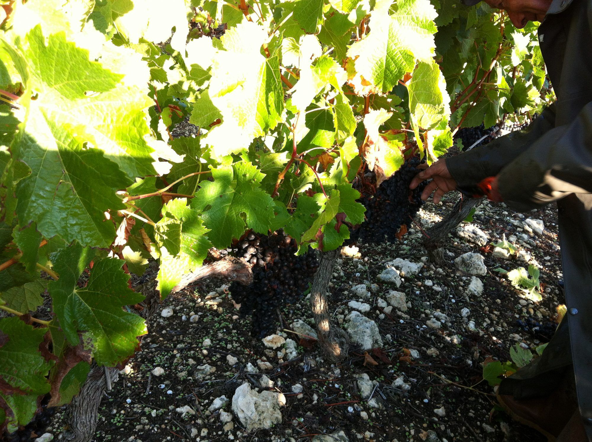
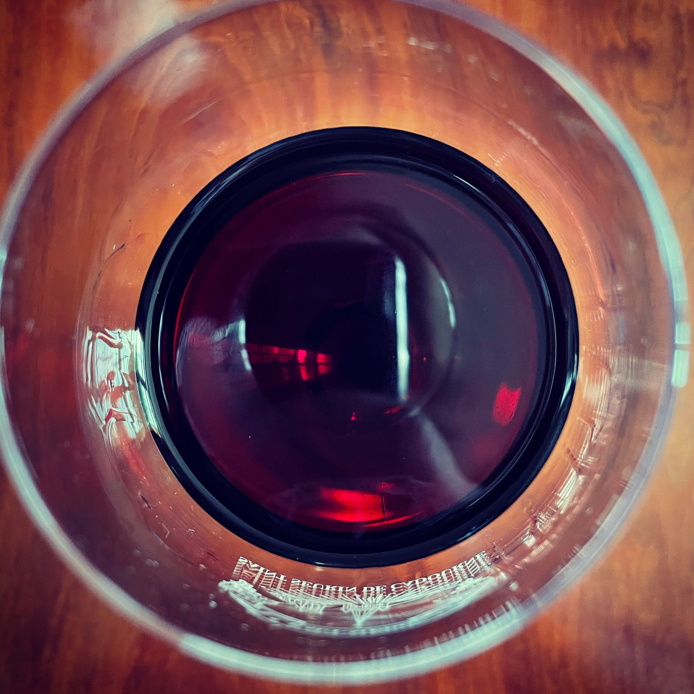
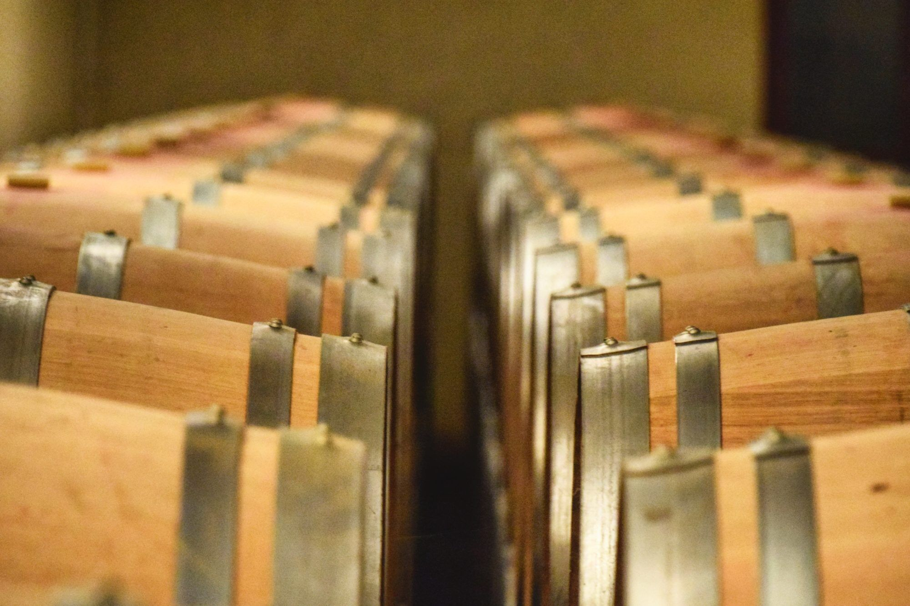

Partagez le plaisir du fils

découvrez
nos millésimes
- La boutique de la familleLes trois châteaux, un seul panier
- Où trouver nos vinsLes caves V and B : la carte des magasins
- Maisons du VinSaint-Seurin-de-Cadourne et Pauillac
- En BelgiqueDelhaize
- Dans le mondeLes négociants de la Place de Bordeaux
Le vin
né de la pierre,
à partager sans attendre

découvrez
la famille

Vigneron du prêt-à-boire
Prêt à boire
dès sa jeunesse
Dans la famille, un vin se vend quand il est prêt. Soudars l'est tôt : souple, juteux, gourmand, il s'ouvre sur la framboise et la cerise dès ses premières années. Ses aînés, Coufran et Verdignan, attendent au château le temps qu'il leur faut.
- Souple et fruité dès sa jeunesse
- À ouvrir sans attendre
- Coufran et Verdignan, eux, vieillissent au château
Trois châteaux voisins, une même famille
Coufran, Verdignan ou Soudars : lequel vous ressemble ?
Sept questions simples, sur ce que vous aimez et ce que vous aimez boire, sans rien connaître au vin.
Faire le test
Enquête à la racine · Témoin n° 3
Éric
Le fils · arrivé en 1980
« En 1980, on m'a dit que les grands vins du Médoc ne naissaient que sur les graves. J'ai acheté des friches pleines de pierres et de ronces. On a tout épierré à la main. »Reprendre l'enquête
Pièce à conviction
50 %
de merlot dans Château Soudars : exactement la moitié. Le cabernet-sauvignon fait presque tout le reste, le cabernet franc une seule part.